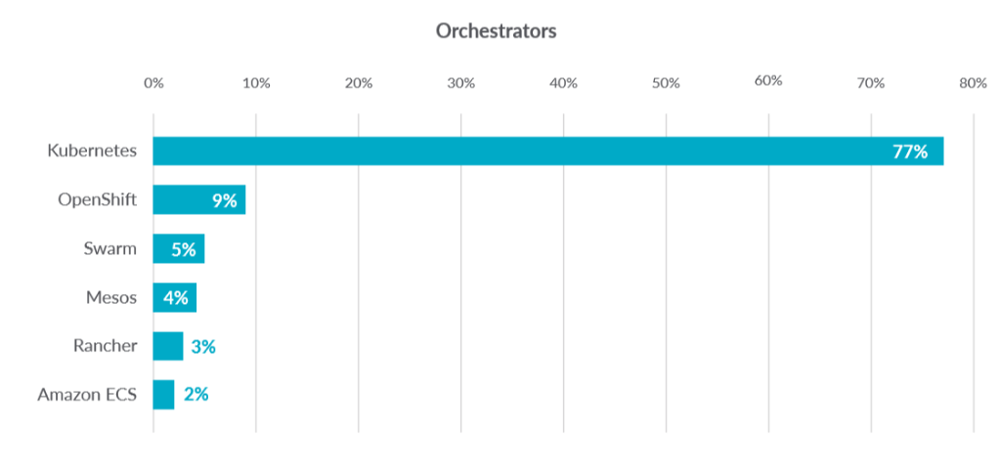
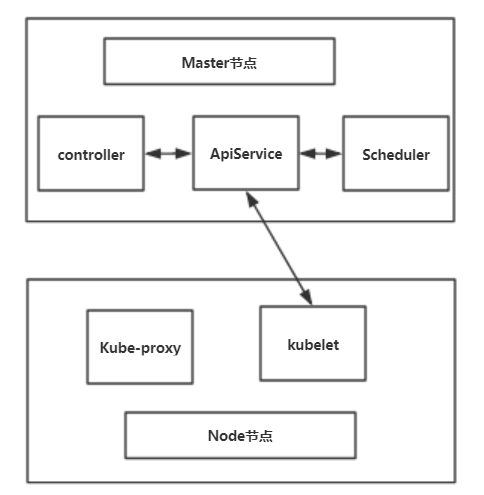

k8s的基本组件
目录
（1）k8s简介
（2）k8s组件介绍
背景简介
Docker 项目和容器技术目前还是非常火热，但是Docker 技术栈，有自己的局限性，这是它的出发点决定的。那么在docker层之上，例如 容器编排？调度？容器云？集群管理？这些事情就需要另外一个项目来解决了。
在我最开始接触k8s的时候，我看到的对k8s的介绍，都是：目前最主流的容器编排工具。当时非常困惑的一点在于什么是容器编排？
我认为的容器编排是 针对这些容器中运行的服务进行的一系列操作，什么操作呢：
- 弹性伸缩、自动扩容
- 健康检查
- 服务发现、负载均衡
- 自动恢复
- 滚动升级
- 等等
这些年，容器编排工具最受欢迎的就是 Google 与 RedHat 公司共同主导的 Kubernetes 项目。

图片来源于 【Sysdig： 2019年容器使用报告】
可见，目前k8s已经成为了编排工具的主流。
k8s组件介绍
k8s设计背景
k8s的设计思路来源于Borg 系统，Borg一直以来都被誉为 Google 公司内部最强大的“秘密武器”。
所以k8s在一开始就站在一个非常高的角度，即：如何编排、管理、调度用户提交的作业？
borg作者认为： 运行在大规模集群中的各种任务之间，实际上存在着各种各样的关系。这些关系的处理，才是作业编排和管理系统最困难的地方。那么k8s是如何表示用户的各种各样的任务呢，k8s又是如何处理这些任务直接的关系呢？
（1）k8s是如何表示管理用户提交的作业
k8s中有 各种资源对象，例如deployment, job, service， Replication 等等。这里的每一中类型都是代表用户的一种任务需求。例如job是批处理作业，运行完就结束。service是要一直运行的任务等。用户可能还有自己特定的一些需求，所以k8s有CRD（用户自定义资源）的概念。
（2）k8s是如何解决这种任务直接的关系呢
k8s提出了一个pod的概念，k8s是调度的最小逻辑。所有的任务类型最终都是以pod的形式运行在集群中。
不同的作业类型有自己的控制器，他们负责pod的逻辑。然后集群只负责管理pod，调度器也只进行作业的调度。
具体细节请往下看。
k8s的架构图

如上图所示，k8s集群中 关键组件
master: api-service , controller manage,scheduler。 PS(etcd可以是放在master节点，也可以说是4个）
node：api-proxy, kubelet
(1) api-service (master)
用于暴露Kubernetes API。任何的资源请求/调用操作都是通过kube-apiserver提供的接口进行。
(2) Scheduler (master)
k8s的调度器，将pod调度的具体的节点上，并启动容器
(3) controller manager (master)
这是控制器的集合。，它们是集群中处理常规任务的后台线程。逻辑上，每个控制器是一个单独的进程，但为了降低复杂性，它们都被编译成单个二进制文件，并在单个进程中运行。
这些控制器包括：
NodeController : 节点控制器
JobController ：作业控制器
replicationController: 副本控制器：负责维护系统中每个副本中的pod。
EndpointsController：填充Endpoints对象（即连接Services＆Pods）。
Service Account和Token控制器：为新的Namespace 创建默认帐户访问API Token。
等等。。。
在这里可以更详细的介绍k8s是如何解决作业之间的关系了。
k8s中scheduler只负责调度pod，它每次从api-service中监听，哪些pod需要调度。然后将调度的结果返回给api-service，至于是哪种类型的任务，他根本就不管。这些的逻辑是由Controller管的。
举例来说：假如集群中提交了一个rc的作业（假设副本数为3）。这个时候 replicationController通过api-service感知到了，它一次性创建3个pod,然后提交到api-service。
这个时候呢，scheduler看到了3个pod,然后它就创建，然后给出结果。至于创建没成功怎么办，创建成功了怎么办。scheduler不管，它只给api-service报告结果，api-service也不管，它扔给replicationController处理。
然后jobController管job类型的。StatefulController管理statefulset类型的。他们最终都是由pod表示并运行的。pod就是他们的联系，k8s scheduler统一对pod进行管理。
(4) kubelet （node）
是主要的节点代理，它会监视已分配给节点的pod，具体功能：
安装Pod所需的volume。
下载Pod的Secrets。
Pod中运行的 docker（或experimentally，rkt）容器。
定期执行容器健康检查。等等
(5) kube-proxy
POD的IP是动态分配的而且经常会变，所以为了可以通过一个不太容易变化的IP访问POD就会使用一个叫做service的东西，通过标签选择器和POD进行关联。
每个NODE都运行一个kube-proxy进程，这个就是service的载体。它负责建立和删除包括更新IPVS规则、通知api-service自己的更新，或者从api-service那里获取其他kube-proxy的IPVS规则变化来更新自己的。